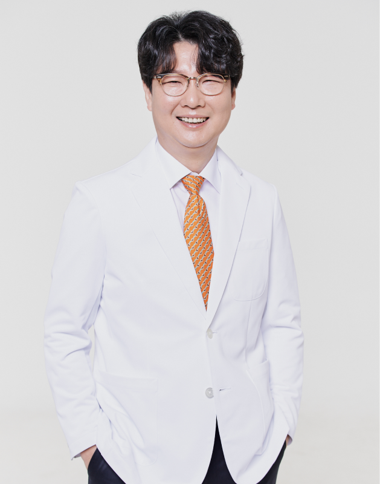
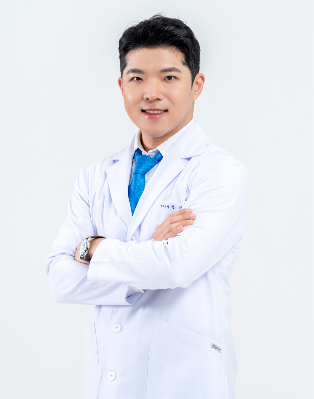
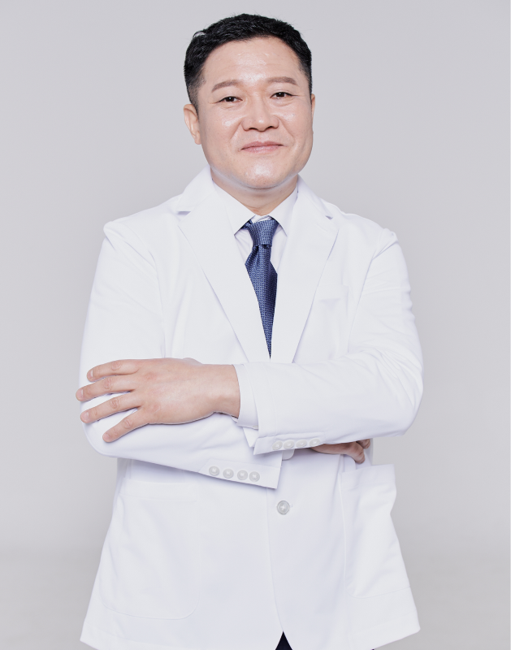
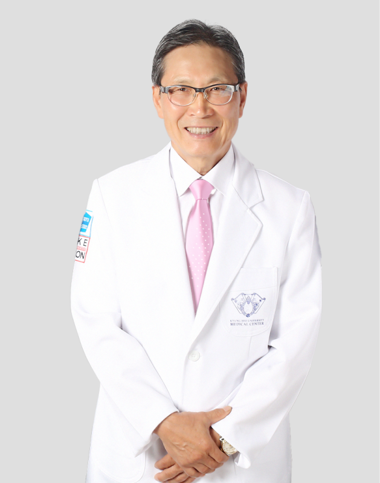

의료진 소개
최용석
대표원장
정세영
대표원장
신민철
원장
정규림
자문교수

최용석 대표원장
학력
- 경희대학교 치과대학 졸업
- 경희대학교 치과병원 인턴 및 레지던트 수료
- 경희대학교 대학원 치의학 석, 박사학위 취득
경력
- 국립중앙의료원 제1진료부 치과 진료과장
- 일본 국립오카야마대학 치학부 연구원
- 경희대 치과대학·병원 교수
- 대한영상치의학회 정회원, 주요 보직 역임
- 대한구강악안면초음파연구회 부회장
- 국제치과연구학회 한국지부회 이사, 간사
- 의료기관평가인증원 인증기준개발 위원
- 건강보험 전문평가위원회 위원
- 한국의료분쟁조정중재원 의료사고감정위원
전문분야
통합치의학, 영상치의학

정세영 대표원장
학력
- 고려대학교 경영학과 졸업
- 연세대학교 치의학과 졸업
경력
- 나주시 공중보건의사
- 대한치과보철학회 정회원
- 대한턱관절교합학회 정회원
- 대한치과근관치료학회 정회원
- 대한치과보철학회 우수보철치과의사
- 대한턱관절교합학회 교합 아카데미 수료
- Dental Bean Master of Third Molar Extraction
전문분야
통합치의학

신민철 원장
학력
- 경희대학교 치과대학 졸업
- 경희대학교 치과병원 인턴, 레지던트 수료
- 경희대학교 대학원 치의학 석·박사학위 취득
- 경희대학교 치과대학 치전원 외래교수
경력
- 대림성모병원 치과과장
- 압구정 클라인치과의원 원장
- 대한치과마취과학회 정회원
- 대한구순구개열학회 정회원
- 대한양악수술학회 정회원
- 대한악안면성형재건외과학회 정회원,인정의
- Member of Spear Education Since 2014
전문분야
구강악안면외과

정규림 자문교수
학력
- 경희대학교 치과대학 졸업
- 경희대학교 대학원 치의학 석·박사 취득
- 경희대학교 치과대학 교정과 과장
경력
- 대한 치과교정학회 회장
- 아주대학교 치과학 교실 주임교수
- 아주대학교 임상치과학 대학원장장
- UCLA 교정과 방문교수
- 일본 오사카치대 교정과 객원교수
- 2015 AJODO 백년 Top100 저자선정
- 한국 바이오 급속교정 창안자
전문분야
치과교정과